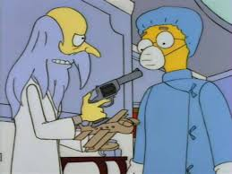

Planta de Energía Nuclear de Springfield
Ubicación: Zona Industrial.
Es el principal orgullo industrial de la ciudad, manejada por el gran empresario, el Sr. Charles Montgomery Burns, esta planta genera energía limpia a todos los habitantes y cuenta con empleados de excelente calidad técnica.
¿Qué hacer aquí? Los días sábados de 09:00 a 10:00 hay una visita guiada por el asistente personal del Sr. Burns, el Sr. Smithers.
Pedir más información
